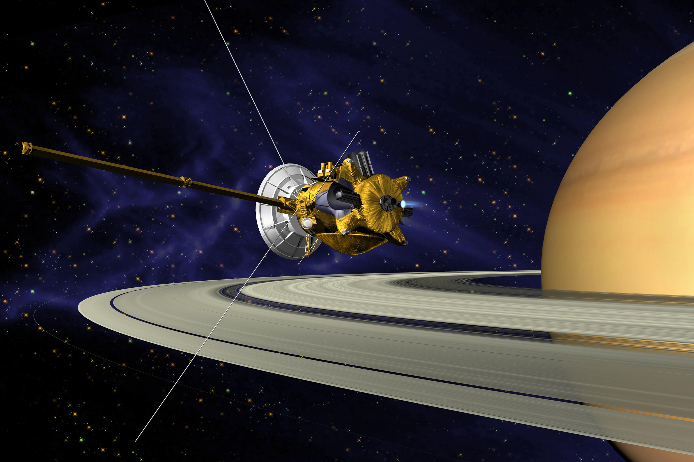

SATÉLITES

Satélite é um corpo que acompanha ou gira em torno de outro, observado principalmente no campo da astronomia, seja ele artificial ou natural. Do ponto de vista da astronomia, um satélite seria tudo aquilo que orbita algo de maior tamanho, desde um planeta anão até galáxias inteiras (que orbitam outras de maior dimensão e força). Já no campo da astronáutica ciência que desenvolve máquinas que ocupam a atmosfera terrestre e o espaço, os satélites são objetos construídos pelo homem e que servem para mapear a superfície da Terra (fazendo fotografias da geografia do planeta, por exemplo), além de transmitir informações para todos os cantos do mundo e do Universo, eles sao conhecidos como Satélites artificiais. A palavra satélite ainda pode ser usada como uma analogia ao indivíduo que acompanha e admira intensamente outra pessoa, estando assim constantemente ao seu redor. Assim, partindo desta mesma interpretação, um satélite também pode se referir a qualquer coisa que dependa de outra, como estruturas, cidades, países, etc.
O Sputnik 1 foi o primeiro satélite artificial lançado ao espaço, marcando um momento histórico na exploração espacial. Foi lançado pela União Soviética em 4 de outubro de 1957, durante a Guerra Fria, e desempenhou um papel significativo na corrida espacial entre os Estados Unidos e a União Soviética.O Sputnik 1 tinha o formato de uma esfera metálica de aproximadamente 58 centímetros de diâmetro. Ele foi equipado com quatro antenas que se estendiam a partir da esfera e transmitia sinais de rádio que podiam ser captados por rádios amadores em todo o mundo. O satélite tinha uma massa de cerca de 84 quilogramas.O objetivo principal do Sputnik 1 era demonstrar a capacidade da União Soviética de lançar objetos em órbita ao redor da Terra. Ele completava uma órbita em torno do nosso planeta a cada 96 minutos e 12 segundos, a uma altitude máxima de cerca de 947 quilômetros.O lançamento do Sputnik 1 teve um impacto profundo na comunidade internacional. Foi a primeira vez na história que um objeto feito pelo homem foi colocado em órbita. O sucesso do satélite soviético causou grande surpresa e preocupação nos Estados Unidos, que até então lideravam a corrida tecnológica. Isso levou à intensificação dos esforços americanos para alcançar e superar a União Soviética na exploração espacial, culminando com a missão da Apollo 11 e a chegada do homem à Lua em 1969.O Sputnik 1 permaneceu em órbita por aproximadamente três meses antes de entrar na atmosfera terrestre e queimar-se durante a reentrada em 4 de janeiro de 1958. No entanto, o impacto do seu lançamento foi duradouro e marcou o início da era espacial, abrindo caminho para inúmeras missões espaciais subsequentes e para o desenvolvimento de tecnologias que revolucionaram a comunicação, a navegação e a observação da Terra a partir do espaço.


O Explorer 1 foi o primeiro satélite lançado pelos Estados Unidos como parte do programa Explorer, e foi um marco importante na história da exploração espacial. Ele foi lançado em 31 de janeiro de 1958.O satélite Explorer 1 foi projetado para estudar a radiação cósmica e contribuiu significativamente para a descoberta da cintura de radiação de Van Allen, nomeada em homenagem ao cientista James Van Allen, que liderou a equipe responsável pelos instrumentos científicos do satélite.A missão do Explorer 1 foi um sucesso, e os dados coletados revelaram a existência de duas regiões de intensa radiação na órbita da Terra, conhecidas como Cinturões de Van Allen. Essas descobertas ajudaram a compreender melhor o ambiente espacial e tiveram um impacto significativo no desenvolvimento futuro de tecnologias espaciais.O Explorer 1 foi colocado em órbita por um foguete Juno I e teve uma duração de aproximadamente 12 anos antes de reentrar na atmosfera e queimar-se.Além de suas contribuições científicas, o Explorer 1 também abriu caminho para futuras missões espaciais e desempenhou um papel fundamental no estabelecimento da NASA (Agência Espacial Americana) como líder na exploração espacial.
O Satélite Explorer 6, também conhecido como Explorer VI, foi um satélite lançado pela NASA em 7 de agosto de 1959. Foi parte do programa Explorer, uma série de missões espaciais dedicadas à exploração científica da Terra e do espaço.O objetivo principal do Explorer 6 era estudar a atmosfera da Terra e a radiação cósmica. Ele foi equipado com instrumentos científicos para medir a densidade do ar, a temperatura, a pressão e a composição da atmosfera em diferentes altitudes. Além disso, o satélite carregava um espectrômetro de raios X para medir a radiação cósmica que chega à Terra.O Explorer 6 foi o primeiro satélite a transmitir imagens de televisão ao vivo da Terra do espaço. Ele carregava uma câmera de televisão que capturava imagens da Terra e as transmitia para estações receptoras em solo. Essas imagens proporcionaram uma visão sem precedentes do nosso planeta a partir do espaço e ajudaram a avançar nosso conhecimento sobre a Terra e seu ambiente.Apesar de seu sucesso em transmitir imagens de televisão e coletar dados científicos, o Explorer 6 teve uma vida útil relativamente curta. Ele permaneceu em órbita por aproximadamente um ano e meio antes de reentrar na atmosfera da Terra e se desintegrar.O legado do Explorer 6 é significativo. Sua capacidade de transmitir imagens de televisão ao vivo estabeleceu as bases para futuras missões espaciais e contribuiu para o desenvolvimento de tecnologias de satélite e comunicação que são amplamente utilizadas hoje em dia. Além disso, as informações científicas coletadas pelo satélite ajudaram a expandir nossa compreensão sobre a atmosfera terrestre e a radiação cósmica.

O TIROS-1 (Television Infrared Observation Satellite-1) foi o primeiro satélite de observação meteorológica lançado pelos Estados Unidos. Ele foi lançado em 1º de abril de 1960, como parte do programa TIROS, desenvolvido pela NASA em colaboração com outras agências governamentais.O objetivo principal do TIROS-1 era fornecer imagens da Terra a partir do espaço para melhorar a previsão do tempo. O satélite carregava câmeras de televisão e sensores infravermelhos que permitiam capturar imagens das nuvens, tempestades e outros fenômenos meteorológicos.O TIROS-1 foi um marco importante na história da observação meteorológica por satélite. Ele transmitia as imagens para estações receptoras na Terra, permitindo que os meteorologistas analisassem e interpretassem os dados em tempo quase real. Essas informações ajudaram a melhorar a compreensão dos padrões climáticos e aprimorar as previsões meteorológicas.Apesar de ter operado por apenas 78 dias antes de falhar, o TIROS-1 foi um sucesso significativo. Suas imagens revelaram detalhes surpreendentes sobre a atmosfera terrestre e abriram caminho para o desenvolvimento de uma rede global de satélites meteorológicos, fornecendo uma visão contínua do clima em escala global.O lançamento e o sucesso do TIROS-1 foram fundamentais para o avanço da meteorologia espacial e o estabelecimento de sistemas de observação por satélite que desempenham um papel essencial em nosso monitoramento do clima e previsões meteorológicas até os dias de hoje.
O Vostok 1 foi o nome da primeira missão espacial tripulada da União Soviética e marcou um marco histórico na exploração espacial. A missão ocorreu em 12 de abril de 1961 e foi conduzida pelo cosmonauta Yuri Gagarin.O objetivo principal da missão Vostok 1 era colocar um humano em órbita ao redor da Terra. Yuri Gagarin foi selecionado para ser o primeiro ser humano a viajar para o espaço. Ele foi lançado a bordo da espaçonave Vostok 1, impulsionada por um foguete Vostok-K, a partir do cosmódromo de Baikonur, no Cazaquistão.A espaçonave Vostok 1 completou uma órbita ao redor da Terra, levando Gagarin a uma altitude máxima de cerca de 327 quilômetros. A duração total da missão foi de aproximadamente 108 minutos, durante os quais Gagarin experimentou a ausência de gravidade e forças G extremas.O sucesso da missão Vostok 1 foi um triunfo para a União Soviética, que se tornou o primeiro país a enviar um ser humano ao espaço. Yuri Gagarin se tornou um herói nacional e um ícone da exploração espacial. Sua conquista impulsionou a corrida espacial entre os Estados Unidos e a União Soviética durante a Guerra Fria.Além de seu significado histórico, a missão Vostok 1 também proporcionou valiosos dados e conhecimentos sobre a viabilidade de voos espaciais tripulados. Ela abriu caminho para missões subsequentes, incluindo os voos Vostok posteriores e o programa espacial Soyuz da União Soviética.O Vostok 1 e a corajosa jornada de Yuri Gagarin permanecem como um marco na história da exploração espacial, destacando o espírito humano de descoberta e a busca por explorar os confins do espaço.


O Luna 10 foi a quarta missão do programa espacial soviético Luna e foi lançado em 31 de março de 1966. Foi o primeiro satélite artificial a entrar em órbita lunar e também o primeiro a transmitir informações de volta à Terra a partir da órbita lunar.O objetivo principal da missão Luna 10 era estudar a Lua de perto e coletar dados científicos sobre sua superfície e ambiente. A espaçonave Luna 10 foi equipada com instrumentos científicos, incluindo detectores de raios cósmicos, dispositivos para medir campos magnéticos e instrumentos para estudar a composição da atmosfera lunar.Após ser lançado com sucesso, o Luna 10 entrou em uma órbita lunar elíptica, completando uma volta ao redor da Lua a cada duas horas e quatro minutos. Durante sua missão, o satélite transmitiu uma série de informações científicas para a Terra, incluindo dados sobre o campo magnético lunar e a composição da atmosfera.As descobertas do Luna 10 foram significativas para a compreensão da Lua e forneceram importantes insights sobre suas características geológicas e atmosfera. A missão demonstrou a capacidade da União Soviética de realizar exploração espacial bem-sucedida e contribuiu para o conhecimento científico da época.O Luna 10 continuou a operar e transmitir dados até 30 de maio de 1966, quando sua energia se esgotou. A missão foi considerada um sucesso e abriu caminho para missões lunares posteriores, que trouxeram mais informações valiosas sobre a Lua e pavimentaram o caminho para futuras explorações espaciais.
O Mariner 9 foi uma missão espacial não tripulada realizada pela NASA, lançada em 30 de maio de 1971. Foi a primeira espaçonave a entrar em órbita de Marte e se tornou a primeira missão bem-sucedida a estudar detalhadamente o planeta vermelho.O objetivo principal do Mariner 9 era mapear a superfície de Marte, estudar sua atmosfera e procurar por sinais de atividade vulcânica e mudanças sazonais. A espaçonave estava equipada com câmeras, espectrômetros e outros instrumentos científicos para coletar dados sobre o planeta.O Mariner 9 foi lançado com sucesso e, após uma jornada de cerca de cinco meses, entrou em órbita marciana em 14 de novembro de 1971. Durante sua missão, a espaçonave transmitiu imagens de alta resolução da superfície de Marte, revelando detalhes geológicos e características marcantes, como os vulcões do Monte Olimpo e o desfiladeiro Valles Marineris.Além disso, o Mariner 9 estudou a atmosfera de Marte, fornecendo informações sobre a composição química e as condições meteorológicas do planeta. A espaçonave também identificou tempestades de poeira e observou mudanças sazonais na superfície marciana.O Mariner 9 operou com sucesso até outubro de 1972, fornecendo um tesouro de dados científicos sobre Marte. A missão foi um marco importante na exploração espacial e contribuiu significativamente para a compreensão do planeta vermelho. Suas descobertas ajudaram a estabelecer as bases para missões futuras a Marte, incluindo a exploração robótica e a busca por sinais de vida no planeta.

O Venera 9 foi uma missão espacial soviética lançada em 1975 para explorar Vênus. A sonda transmitiu as primeiras imagens da superfície venusiana e coletou dados sobre a atmosfera, temperatura e pressão do planeta. Foi a primeira vez na história que imagens foram capturadas e transmitidas a partir da superfície de outro mundo. As imagens revelaram uma paisagem árida e acidentada. A missão Venera 9 foi um marco na exploração espacial, fornecendo informações valiosas sobre as condições extremas de Vênus e a natureza de sua atmosfera. Esses dados contribuíram para avanços significativos na compreensão de Vênus e abriram caminho para missões subsequentes de exploração. A missão Venera 9 foi pioneira no pouso de uma sonda em outro planeta e na transmissão de imagens em tempo real. Ela demonstrou a capacidade da União Soviética de realizar explorações espaciais bem-sucedidas e obter conhecimentos sobre os planetas do sistema solar. A missão Venera 9 permanece como uma conquista histórica e um marco no estudo de Vênus. Suas descobertas contribuíram para a ampliação do conhecimento humano sobre nosso sistema solar e a exploração do espaço.
O Telescópio Espacial Hubble é um dos observatórios espaciais mais conhecidos e importantes. Foi lançado em 1990 pela NASA e é responsável por algumas das imagens mais incríveis e detalhadas do universo já capturadas.O Hubble é um telescópio óptico que opera fora da atmosfera terrestre, o que lhe permite evitar as distorções causadas pela atmosfera e obter imagens mais nítidas e claras. Ele está localizado em uma órbita baixa da Terra, a cerca de 550 quilômetros de altitude.Ao longo dos anos, o Hubble tem sido usado para uma ampla gama de pesquisas astronômicas. Ele ajudou a determinar a idade do universo, estudar a formação e evolução de galáxias, investigar buracos negros, observar estrelas e planetas fora do nosso sistema solar, e muito mais.Além disso, o Hubble desempenhou um papel fundamental na divulgação científica e na popularização da astronomia. Suas imagens espetaculares, incluindo a famosa "Pilares da Criação", têm inspirado e fascinado pessoas ao redor do mundo.Ao longo dos anos, o Hubble passou por várias missões de manutenção e atualização realizadas por astronautas do Ônibus Espacial, permitindo que o telescópio continuasse operando e fornecendo novas descobertas e informações científicas valiosas.O Telescópio Espacial Hubble é uma ferramenta essencial para a astronomia moderna e tem contribuído significativamente para nossa compreensão do universo. Suas descobertas e imagens icônicas continuam a inspirar e maravilhar cientistas e o público em geral, tornando-o um dos instrumentos mais importantes e amados da exploração espacial.


O satélite Galileo foi um sistema de navegação por satélite desenvolvido pela União Europeia (UE) e pela Agência Espacial Europeia (ESA). O projeto teve início na década de 1990 e foi lançado em várias fases entre 2011 e 2019.O objetivo principal do sistema Galileo era fornecer um sistema global de posicionamento e navegação por satélite, semelhante ao GPS dos Estados Unidos. Ele foi projetado para oferecer maior precisão e confiabilidade em comparação com outros sistemas de navegação existentes.O sistema Galileo consiste em uma constelação de satélites em órbita da Terra, bem como estações terrestres e infraestrutura de controle em solo. Os satélites Galileo transmitem sinais de rádio que podem ser recebidos por dispositivos compatíveis, permitindo a determinação precisa da posição e o fornecimento de informações de tempo.O Galileo foi projetado para ter várias aplicações, incluindo navegação marítima, aérea e terrestre, além de aplicações militares, científicas e comerciais. O sistema também oferece serviços de busca e salvamento global, permitindo a localização rápida de embarcações ou indivíduos em situações de emergência.A implementação do sistema Galileo foi um esforço significativo da Europa para estabelecer independência no campo de navegação por satélite. Ele fornece uma alternativa aos sistemas GPS e GLONASS, oferecendo maior precisão e cobertura em todo o mundo.O satélite Galileo representa um marco importante para a indústria espacial europeia e demonstra a capacidade da Europa de desenvolver tecnologias espaciais avançadas. O sistema Galileo continua em operação e oferece benefícios significativos para uma ampla gama de setores, contribuindo para aprimorar a precisão da navegação e melhorar a conectividade global.
A sonda Cassini-Huygens foi uma missão espacial colaborativa entre a NASA, a Agência Espacial Europeia (ESA) e a Agência Espacial Italiana (ASI). Lançada em 1997, a sonda Cassini tinha como destino o planeta Saturno e suas luas.O objetivo principal da missão Cassini-Huygens era estudar Saturno, seus anéis e luas em detalhes. A sonda Cassini foi projetada para entrar em órbita de Saturno e realizar uma série de sobrevoos próximos das luas do planeta, enquanto a sonda Huygens, desenvolvida pela ESA, foi projetada para pousar na maior lua de Saturno, Titã.A Cassini-Huygens chegou a Saturno em 2004 e começou a enviar uma enorme quantidade de dados científicos e imagens fascinantes de Saturno e suas luas. A sonda descobriu novas luas, revelou detalhes impressionantes sobre os anéis de Saturno e coletou dados sobre a atmosfera, campos magnéticos e geologia do planeta.A parte mais notável da missão foi o pouso bem-sucedido da sonda Huygens em Titã, em janeiro de 2005. Foi a primeira vez na história que uma sonda aterrissou em uma lua fora do nosso sistema solar. A Huygens transmitiu dados valiosos sobre a atmosfera, a superfície e as características geológicas de Titã.A missão Cassini-Huygens durou quase duas décadas e encerrou-se em 2017, quando a sonda Cassini foi intencionalmente direcionada para mergulhar na atmosfera de Saturno, a fim de evitar a contaminação de possíveis luas habitáveis.A missão Cassini-Huygens foi um marco na exploração espacial, fornecendo uma riqueza de informações e imagens impressionantes sobre Saturno, seus anéis e luas. Suas descobertas contribuíram significativamente para o nosso conhecimento dos planetas gasosos e das luas do sistema solar, além de nos fornecer uma visão mais profunda sobre a possibilidade de vida em outros mundos.

O satélite Messenger foi uma missão espacial da NASA que teve como objetivo estudar o planeta Mercúrio. Foi lançado em 2004 e entrou em órbita de Mercúrio em 2011, tornando-se a primeira sonda a orbitar esse planeta.A missão Messenger foi projetada para coletar dados sobre a geologia, a composição química, a atmosfera e o campo magnético de Mercúrio. A sonda estava equipada com vários instrumentos científicos avançados, incluindo câmeras, espectrômetros e magnetômetros.Durante a missão, o Messenger realizou várias passagens próximas a Mercúrio para mapear sua superfície e estudar suas características. A sonda descobriu vulcões extintos, falhas tectônicas e grandes crateras na superfície do planeta.A missão também revelou que Mercúrio possui uma composição química única, com uma grande quantidade de elementos como enxofre e potássio presentes em sua superfície. Além disso, o Messenger encontrou evidências de gelo de água em crateras nas regiões polares de Mercúrio, apesar das altas temperaturas no planeta.O satélite Messenger encerrou sua missão em 2015, quando a sonda foi intencionalmente desviada e impactou a superfície de Mercúrio. Essa manobra foi realizada para evitar a contaminação de possíveis luas habitáveis e para obter o máximo de informações científicas antes do fim da missão.A missão Messenger foi uma conquista significativa na exploração espacial, fornecendo um conhecimento detalhado sobre o planeta Mercúrio, que é o mais próximo do Sol e um dos planetas menos explorados do sistema solar. Suas descobertas contribuíram para nossa compreensão dos processos geológicos, atmosféricos e históricos em Mercúrio, ajudando a desvendar os segredos desse mundo intrigante.
O satélite Rosetta foi uma missão espacial da Agência Espacial Europeia (ESA) lançada em 2004 com o objetivo de estudar o cometa 67P/Churyumov-Gerasimenko. A missão foi pioneira e notável por ter incluído um módulo de pouso, chamado Philae, que pousou com sucesso na superfície do cometa.A sonda Rosetta viajou por mais de uma década até chegar ao cometa em 2014. Durante esse período, a sonda realizou sobrevoos próximos de planetas para obter impulso gravitacional e ajustar sua trajetória até alcançar o cometa.Ao chegar ao cometa 67P/Churyumov-Gerasimenko, a sonda Rosetta começou a mapear e estudar o cometa em detalhes. Ela enviou imagens, dados de composição química e informações sobre o ambiente do cometa de volta à Terra.O momento mais notável da missão foi o pouso bem-sucedido do módulo Philae na superfície do cometa em novembro de 2014. Essa foi a primeira vez na história que uma sonda pousou em um cometa. O módulo Philae realizou uma série de experimentos e enviou dados valiosos antes de sua bateria se esgotar.A missão Rosetta revelou informações cruciais sobre a composição dos cometas, sua estrutura, evolução e interação com o Sol. As descobertas da missão ajudaram a ampliar nossa compreensão sobre a formação do sistema solar e a origem da água e dos compostos orgânicos na Terra.A missão Rosetta terminou em setembro de 2016, quando a sonda foi deliberadamente impactada na superfície do cometa, encerrando sua jornada. A missão deixou um legado duradouro no campo da exploração espacial e nos ensinou muito sobre os cometas, fornecendo insights valiosos sobre a história e a evolução do nosso sistema solar.


A Starlink é um projeto da empresa SpaceX, fundada por Elon Musk, que tem como objetivo fornecer acesso à internet de alta velocidade em áreas remotas e carentes de infraestrutura de rede. O projeto consiste em uma constelação de satélites de comunicação em órbita baixa da Terra.A constelação Starlink é composta por milhares de pequenos satélites, que são lançados em grupos e se posicionam em diferentes órbitas ao redor do planeta. Esses satélites estão equipados com antenas e sistemas de comunicação avançados, permitindo a transmissão de dados entre a rede terrestre e os usuários finais.Uma das principais vantagens da Starlink é sua capacidade de fornecer uma conexão de internet estável e de alta velocidade, mesmo em áreas remotas. Isso ocorre porque os satélites em órbita baixa permitem um tempo de resposta mais rápido e reduzem a latência em comparação com sistemas de satélites de comunicação em órbitas mais altas.Além disso, a constelação Starlink tem como objetivo oferecer uma cobertura global e proporcionar acesso à internet para pessoas em todo o mundo, especialmente em regiões com infraestrutura limitada. Isso pode ter um impacto significativo no acesso à educação, serviços de saúde, comunicação e desenvolvimento econômico.No entanto, o lançamento e operação de uma constelação tão grande de satélites não está isento de desafios. Algumas preocupações incluem a poluição espacial, interferência com outras comunicações por satélite e a possível obstrução da observação astronômica.A Starlink continua a expandir sua constelação de satélites, com lançamentos regulares de grupos de satélites e melhorias contínuas em sua tecnologia. O projeto tem despertado interesse e expectativas em relação à democratização do acesso à internet em todo o mundo e tem o potencial de mudar a forma como as pessoas se conectam globalmente.